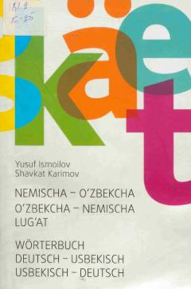

NONemis va o'zbek tillari uchun 50 mingga yaqin so'z va iboralarni o'z ichiga olgan lug'at.
Ushbu lug'at nemis va o'zbek tillaridagi 50 mingga yaqin so'z va iboralarni o'z ichiga olgan keng qamrovli qo'llanmadir. Unda ijtimoiy hayot, ilm-fan, texnika, tibbiyot va iqtisodiyot kabi sohalarga oid atamalar hamda og'zaki so'zlashuv namunalari jamlangan.